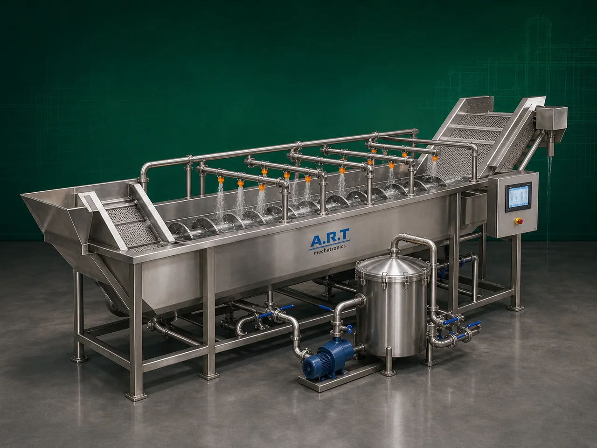

Washer Machine (Industrial Fruit, Vegetable & Food Product Washing System)
A Washer Machine, also known as an Industrial Washing Machine or Fruit & Vegetable Washing Machine, is an essential food processing equipment designed for washing, cleaning, rinsing, and removing dirt, mud, dust, pesticides, surface impurities, and contaminants from fruits, vegetables, grains, roots, nuts, and food products using water-based cleaning systems.

About the Washer Machine
The machine improves:
- Product hygiene
- Food safety
- Product appearance
- Processing efficiency
- Shelf life of food products
Industrial washer machines use various cleaning technologies such as:
- Water spray washing
- Bubble washing
- Drum washing
- Brush washing
- Immersion washing
- High-pressure rinsing
depending on the product and cleaning requirement.
Washer machines are widely used in industries such as:
Fruit processing industries
Vegetable processing plants
Frozen food industries
Snack food manufacturing
Ready-to-eat food industries
Agro product processing
Spice processing industries
Food export industries
where thorough cleaning and hygienic processing are critical.
The machine is highly suitable for:
- Fruit washing
- Vegetable cleaning
- Potato washing
- Ginger washing
- Leafy vegetable cleaning
- Root crop cleaning
- Grain and agro product washing
ART Mechatronics offers high-performance washer machines, engineered for efficient cleaning, hygienic food-grade processing, low water wastage, and reliable industrial operation.
Working Principle of Washer Machine
Fruits, vegetables, roots, grains, or food products are fed into washing chamber or conveyor system
Depending on machine type, cleaning occurs using:
- Water spraying
- Bubble agitation
- Immersion washing
- Rotating drum action
- Brush cleaning
Removes dirt, mud, dust, and surface impurities efficiently
Material moves continuously through washing zone Ensures uniform cleaning from all sides
Dirt, stones, leaves, and floating impurities separated from product
Clean water rinse improves hygiene and product cleanliness
Cleaned products discharged for further processing or packaging
Types of Washer Machines
- 1. Bubble Washer Machine
Uses: ✔ Air bubble agitation system for gentle washing of fruits and vegetables.
- 2. Spray Washer Machine
Uses: ✔ High-pressure water spray for surface cleaning applications.
- 3. Drum Washer Machine
Uses: ✔ Rotating drum cleaning action for root vegetables and agro products.
- 4. Brush Washer Machine
Uses: ✔ Rotating brush rollers for intensive cleaning and polishing.
- 5. Immersion Washer Machine
Suitable for: ✔ Delicate product washing applications
- 6. Continuous Industrial Washer Machine
Designed for: ✔ Large-scale food processing plants
Industries Using Washer Machine
🍃 Fruit Processing Industry Fruit washing and cleaning 🥬 Vegetable Processing Industry Vegetable cleaning and preparation 🍟 Snack Food Industry Potato and root crop washing 🥫 Ready-to-Eat Food Industry Ingredient preparation and cleaning 🌶️ Spice Industry Ginger and raw spice washing ❄️ Frozen Food Industry Pre-processing cleaning systems 🌾 Agro Processing Industry Grain and raw product washing
Features & Advantages
- Efficient dirt and impurity removal
- Hygienic food-grade washing system
- Improves food safety and product quality
- Continuous industrial operation
- Low water consumption options available
- Heavy-duty stainless steel construction
- Easy cleaning and maintenance
- Reduces manual labor requirement
- Suitable for multiple fruits and vegetables
Technical Highlights
Washing Technology: Bubble washing Spray washing Drum washing Brush washing Immersion washing Construction: Stainless Steel food-grade design Capacity: Small to large industrial throughput Water System: Fresh water rinse Water recirculation option Operation: Batch type Continuous type Automation: Semi-automatic Fully automatic PLC-based
Turnkey Washing Solutions
ART Mechatronics offers: Complete washing and cleaning systems Conveyor and sorting integration Peeling and cutting line integration Water filtration and recycling systems Installation & commissioning After-sales service & AMC
Why Choose Art Mechatronics
Expertise in industrial food processing systems Customized washing solutions for multiple products Hygienic food-grade machine construction High-performance and reliable operation Proven industrial performance across sectors
Applications
Fruit Processing Plants Vegetable Processing Industries Snack Manufacturing Facilities Frozen Food Plants Spice Processing Industries Food Export Units
Industries that use the Washer Machine
Related Cleaning, Sorting & Grading machines
Get pricing & specs for the Washer Machine
Share the product, target capacity, current process and plant location. These details help our engineers discuss the right machine or line configuration.
One partner, from design to start-up
ART Mechatronics designs, manufactures, installs and commissions your Washer Machine solution with regional presence in India, UAE and Thailand.